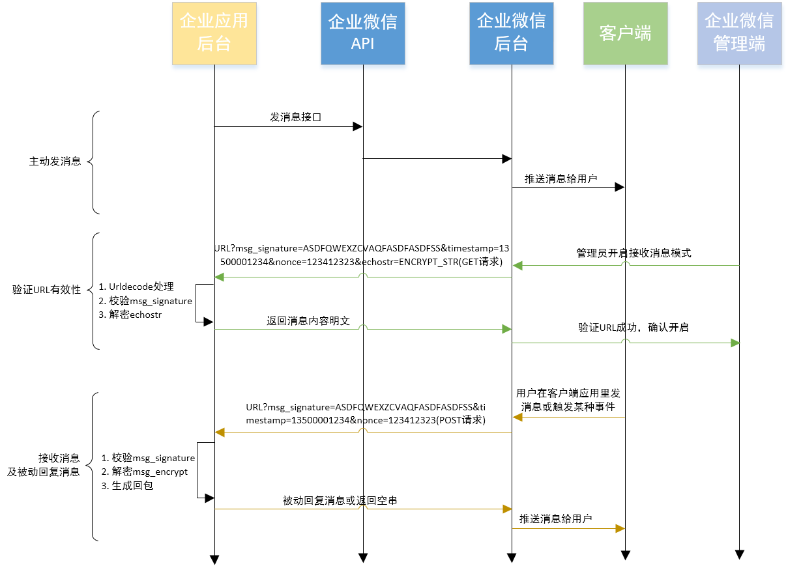

目录
接口概括企业微信开放了消息发送接口，企业可以使用这些接口让自定义应用与企业微信后台或用户间进行双向通信。
接口概括
消息接口总体上分为主动发送单聊消息、接收单聊消息以及发送消息到群三部分
- 主动发送应用消息：企业后台调用接口通过应用向指定成员发送单聊消息
- 接收消息：企业后台接收来自成员的消息或事件
- 要使用接收消息，需要在应用中设置开发者的回调服务器配置。
- 接收消息分为两种：1. 成员在应用客户端里发送的消息；2. 某种条件下触发的事件消息。
- 开发者后台在接收消息后，可以在响应的返回包里带上回复消息，企业微信会将这条消息推送给成员。这就是“被动回复消息”。
- 发送消息到群聊会话：企业后台调用接口创建群聊后，可通过应用推送消息到群内。（暂不支持接收群聊消息）
消息接口流程图如下：(图中"URL"为用户配置的接收消息服务器地址)
